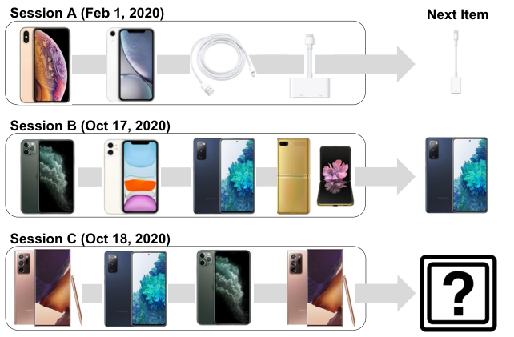
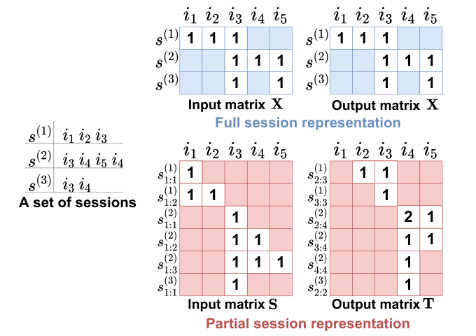

Session-aware Linear Item-Item Models for Session-based Recommendation (会话感知的线性物品-物品推荐模型)
- 会议/期刊: The Web Conference (WWW) 2021
- 作者与机构: Minjin Choi, Jinhong Kim, Jongwuk Lee (成均馆大学)；Joonseok Lee (Google Research / 首尔大学)；Hyunjung Shim (延世大学)
- 推荐链路定位: 召回（匿名会话 Next-Item 预测）
- 研究方向: 序列与会话推荐 / 协同过滤（线性物品-物品模型）
- 论文原文: https://arxiv.org/abs/2103.16104v2
- 开源代码: https://github.com/jin530/SLIST
TL;DR (1分钟核心速览)
会话推荐长期被 DNN（GRU4Rec/SR-GNN）和邻域模型（SKNN/STAN）割裂式建模：前者只盯序列依赖、后者只看会话一致性，无单一模型跨数据集全面 SOTA，且 DNN 训练成本极高。本文提出 SLIST，把「会话一致性」与「序列依赖」拆成两个线性物品-物品模型 SLIS/SLIT，再以权重 \(\alpha\) 融合，配合松弛对角约束（支持重复消费）、时间/位置双指数衰减，且全程闭式解。在 7 个基准上 Full-Ranking，HR@20 全数据集最优（NOWP 上相对 SOTA +9.76%），MRR@20 最高 +8.83%，训练比 SR-GNN 快 768×。
Background & Motivation (背景与核心矛盾)
- 主流范式: DNN 路线（GRU4Rec+/NARM/STAMP/SR-GNN）擅长序列依赖与会话一致性，邻域路线（SKNN/STAN）擅长一致性与可扩展性；线性路线（SLIM/EASE\(^R\)）在传统推荐上以闭式解取胜。
- 前人局限: ①每个模型只优化会话的某几个属性，跨数据集表现方差极大——DNN 在 YC 上占优、邻域模型在 DIGI/RR/NOWP 上占优，没有模型能在全部数据集上稳定领先；②DNN 训练开销不可承受，邻域模型只用相邻会话，无法捕捉全局物品模式。
- 核心洞察 (Key Insight): 会话包含四种正交属性——会话一致性（主题连贯）、序列依赖（顺序性消费）、重复物品消费（同物品多次点击）、会话时效性（近期会话更反映当前兴趣）；而 EASE\(^R\) 的闭式解证明了「加权 Gram 矩阵 + 对角惩罚」既能高效又能表达物品相似度。
- 本文切入点: 用同一套线性物品-物品框架，把它扩展成能同时覆盖上述四种属性的统一闭式解模型 SLIST。

Method (核心方法设计)
1. 整体框架 (Overall Architecture)
输入一条匿名会话 \(s\)，分别以两种表示喂入两个线性模型：Full 表示\(X\in\mathbb{R}^{m\times n}\)（会话内物品集合，用于 SLIS 建模一致性）与Partial 表示\(S,T\in\mathbb{R}^{m'\times n}\)（在时刻\(t\)切分为过去/未来子集，用于 SLIT 建模序列依赖）。两模型各带会话时效权重\(\mathbf{w}_{time}\)，SLIT 额外叠加位置衰减\(\mathbf{w}_{pos}\)。以比率\(\alpha\)加权融合后，通过求解加权 Gram 矩阵逆得到闭式解\(\hat{\mathbf{B}}\)；推理时对输入\(S\)施加推理衰减\(\mathbf{w}_{inf}\)，计算\(\hat{\mathbf{T}}=S\hat{\mathbf{B}}\) 并对全物品排序。
flowchart TD
A["会话序列 s"] --> B["Full 表示 X（一致性）"]
A --> C["Partial 表示 S,T（序列依赖）"]
B --> D["SLIS: w_time + 松弛 ξ"]
C --> E["SLIT: w_time + w_pos"]
D --> F["α 加权融合"]
E --> F
F --> G["闭式解 B̂"]
G --> H["推理: S·B̂ 带 w_inf"]2. 关键设计拆解 (Key Designs)
-
SLIS：松弛对角约束 + 会话时效加权（解决重复消费与时效性）：原 EASE\(^R\)强制\(\text{diag}(\mathbf{B})=0\)，导致无法预测「同物品再次被消费」，这在会话推荐中是致命缺陷。本文改用不等式约束\(\text{diag}(\mathbf{B})\le\xi\)，并将损失重加权： $\(\min_{\mathbf{B}}\ \|\mathbf{W}\odot(\mathbf{X}-\mathbf{X}\mathbf{B})\|_F^2+\lambda\|\mathbf{B}\|_F^2,\quad \text{s.t.}\ \text{diag}(\mathbf{B})\le\xi\)$ 其中 \(\mathbf{W}=\mathbf{w}_{time}\mathbf{1}^\top\)，\(\mathbf{w}_{time}(s)=\exp\!\big(-\tfrac{t_{max}-t(s)}{\delta_{time}}\big)\)。物理直觉：越近的会话 Gram 贡献越大；\(\xi=0\)退化为 EASE\(^R\)，\(\xi=\infty\)完全放开对角线，恰好覆盖重复消费。闭式解为\(\hat{\mathbf{B}}=\mathbf{I}-\hat{\mathbf{P}}\cdot\text{diagMat}(\gamma)\)，\(\hat{\mathbf{P}}=(\mathbf{X}^\top\text{diagMat}(\mathbf{w}_{time}^2)\mathbf{X}+\lambda\mathbf{I})^{-1}\)，\(\gamma_j\)由\(\xi\) 决定。
-
SLIT：Partial 表示 + 位置衰减（解决序列依赖）：全会话集合丢失序关系。将一条会话按每个时刻 \(t\)展开成\(|s|-1\) 条「过去→未来」对（图 2 所示），并加权： $\(\min_{\mathbf{B}}\ \|\mathbf{W}_{par}\odot(\mathbf{T}-\mathbf{S}\mathbf{B})\|_F^2+\lambda\|\mathbf{B}\|_F^2,\quad \hat{\mathbf{B}}=\hat{\mathbf{P}}'\,\mathbf{S}^\top\text{diagMat}(\mathbf{w}_{par}^2)\,\mathbf{T}\)$ 其中 \(\mathbf{w}_{pos}(i,j,s)=\exp\!\big(-\tfrac{|p(i,s)-p(j,s)|}{\delta_{pos}}\big)\)让越近的目标物品权重越高；由于\(S\neq T\)，自然免去平凡解，无需对角约束。
-
统一目标、闭式解与推理效率：融合式 \(\alpha\|\mathbf{W}_{full}\odot(\mathbf{X}-\mathbf{X}\mathbf{B})\|_F^2+(1-\alpha)\|\mathbf{W}_{par}\odot(\mathbf{T}-\mathbf{S}\mathbf{B})\|_F^2+\lambda\|\mathbf{B}\|_F^2\) 仍可解析： $\(\hat{\mathbf{B}}=\mathbf{I}-\lambda\hat{\mathbf{P}}-(1-\alpha)\hat{\mathbf{P}}\mathbf{S}^\top\text{diagMat}(\mathbf{w}_{par}^2)(\mathbf{S}-\mathbf{T})\)$ 其中 \(\hat{\mathbf{P}}=(\alpha\mathbf{X}^\top\text{diagMat}(\mathbf{w}_{full}^2)\mathbf{X}+(1-\alpha)\mathbf{S}^\top\text{diagMat}(\mathbf{w}_{par}^2)\mathbf{S}+\lambda\mathbf{I})^{-1}\)。推理使用\(\mathbf{w}_{inf}(i,s)=\exp(-(|s|-p(i,s))/\delta_{inf})\)做时间衰减。复杂度随物品数\(n\) 而非会话数增长，CPU 可训、无需采样。

Experimental Setup & Evaluation Protocol (实验设置与评估协议)
- 数据集与预处理: 丢弃只含 1 交互的会话，物品交互
< 5过滤（5-core），统计如下（用户为匿名会话，故无 #Users）：
| 数据集 | #Sessions | #Items | #Actions | 平均会话长 | 场景 |
|---|---|---|---|---|---|
| YC-1/64 | 119,287 | 17,319 | 494,330 | 4.14 | 电商 |
| YC-1/4 | 1,939,891 | 30,638 | 7,909,307 | 4.08 | 电商（大规模） |
| DIGI1 | 188,807 | 43,105 | 916,370 | 4.85 | 电商 |
| YC | 1,375,128 | 28,582 | 5,426,961 | 3.95 | 电商（5-split） |
| DIGI5 | 41,755 | 32,137 | 203,488 | 4.86 | 电商（5-split） |
| RR | 59,962 | 31,968 | 212,182 | 3.54 | 电商（5-split） |
| NOWP | 27,005 | 75,169 | 271,177 | 10.04 | 音乐流媒体（5-split） |
- 数据划分与防穿越 (Splitting Strategy): 采用
U全局时间戳切分——测试用会话数据最后 \(N\)天，训练集最后\(N\) 天作验证集，杜绝未来泄漏。 - 排名评测协议 (Ranking Protocol): 迭代揭示（Iterative Revealing）方式逐步暴露会话物品，采用无偏
Full-Ranking（对全部物品排序），报告 HR@20 / MRR@20 / Recall@20 / MAP@20。 - 对比基线与超参设置: 4 类共 8 基线——MC (SR)、邻域 (SKNN, STAN)、线性 (SEASE\(^R\))、DNN (GRU4Rec+, NARM, STAMP, SR-GNN)。\(\alpha\in\{0.2,0.4,0.6,0.8\}\)，\(\delta_{pos},\delta_{inf}\in\{0.125,\dots,8\}\)，\(\delta_{time}\in\{1,\dots,256\}\)。
Key Experimental Results (实验关键数据)
1. 主实验对比 (Main Results)
（单元格为 HR@20 / MRR@20，粗体为各列最优，Improv. 相对最优基线）
| 模型 | YC-1/4 | DIGI1 | DIGI5 | RR | NOWP |
|---|---|---|---|---|---|
| SKNN | .6329/.2496 | .4846/.1736 | .4748/.1714 | .5788/.3370 | .2450/.0687 |
| STAN | .6846/.2829 | .5121/.1851 | .4800/.1828 | .5938/.3638 | .2414/.0871 |
| SEASE\(^R\) | .5550/.1984 | .3906/.1099 | .3531/.1004 | .2727/.1032 | .2088/.0625 |
| GRU4Rec+ | .6940/.2942 | .5097/.1750 | .4639/.1644 | .5669/.3237 | .2261/.1076 |
| NARM | .7079/.2996 | .4979/.1585 | .4188/.1392 | .5549/.3196 | .1849/.0894 |
| SR-GNN | .7118/.3180 | .4904/.1654 | .4158/.1436 | .5433/.3066 | .2113/.0935 |
| SLIST | .7175/.3161 | .5291/.1886 | .5005/.1827 | .6020/.3512 | .2689/.1137 |
| Improv.% | +0.80/-0.60 | +3.32/+1.89 | +4.27/+1.04 | +1.38/-1.51 | +9.76/+8.83 |
2. 消融实验 (Ablation Study)
| 配置 | YC-1/4 HR@20 | YC-1/4 MRR@20 | DIGI1 HR@20 | DIGI1 MRR@20 |
|---|---|---|---|---|
| SLIST (full) | 0.7175 | 0.3161 | 0.5291 | 0.1886 |
| w/o \(w_{time}\) | 0.7096 | 0.3115 | 0.5253 | 0.1880 |
| w/o \(w_{pos}\) | 0.7004 | 0.3031 | 0.5202 | 0.1855 |
| w/o \(w_{inf}\) | 0.6841 | 0.2753 | 0.5145 | 0.1820 |
| w/o \(w_{pos},w_{time}\) | 0.6675 | 0.2693 | 0.5055 | 0.1789 |
| w/o all | 0.6626 | 0.2671 | 0.5025 | 0.1786 |
3. 关键实验发现 (Key Findings)
- 松弛对角约束是重复消费的命门：SEASE\(^R\)因强制\(\text{diag}{=}0\)在会话场景全面崩盘（YC-1/4 HR 仅 .5550），SLIS 的\(\xi\)-松弛使之回升至 .7175；NOWP 会话最长（10.04）且重复点击多，SLIST 在此斩获 +9.76% HR，反证该机制的针对性。
- 权重优先级为 \(w_{inf}>w_{pos}>w_{time}\)：去除\(w_{inf}\) 使 YC-1/4 MRR 从 .3161 掉至 .2753（-12.9%），三项全去掉则降 18.35%；但 DIGI1 上仅降 5.59%，说明序列依赖主导的 YC 更依赖衰减权重、一致性主导的 DIGI 更吃相似度。
- 超线性可扩展性：YC-1/4 上 SLIST 训练 241.9s（CPU），SR-GNN 需 185862.5s（GPU），768× 加速；且训练会话从 5%→100% 时 SLIST 仅 202.7→241.9s，几乎不随样本量增长。\(\alpha\)敏感性验证设计哲学：YC-1/4 最优\(\alpha{=}0.2\)（序列主导），DIGI1 最优\(\alpha{=}0.8\)（一致性主导）。
Highlights & Limitations (亮点、对比与审稿批判)
- 与代表作对比 (vs. Prior Work): 对比 SEASE\(^R\)（同样闭式解但死守对角约束，重复消费不可用）、SR-GNN（图神经建模序列依赖但训练慢、长会话易过拟合）、STAN（邻域一致性强但只用相邻会话）；SLIST 用单框架一次性覆盖多属性并保留闭式解的工业级效率。
- 可迁移亮点: ①松弛对角约束可改造任意线性/矩阵分解召回模型以适配「重复消费」场景（音乐、短视频、复购电商）；②加权 Gram 矩阵闭式解思路可迁移到多场景/多行为的线性融合；③时间/位置双指数衰减可作为任何会话模型的轻量 baseline 权重初始化。
- 审稿级局限批判: ①线性模型对极长会话（>5）建模弱，YC-1/4 长会话上被 SR-GNN 反超，缺乏针对长程依赖的补偿机制；②需显式构造并求逆 \(n\times n\)物品相似度矩阵\(\mathbf{B}\)，物品数爆炸（\(>10^5\)）时内存与求逆开销不可忽略，论文未给出近似方案；③MRR@20 在 YC-1/4 与 RR 上仍略逊（-0.60%/-1.51%），未做显著性检验（\(p\) 值）佐证差异来源。
Rating (四维评分)
- 方法创新性 (Novelty): ⭐⭐⭐⭐ （将线性 item-item 从传统 CF 迁移到会话推荐，松弛对角约束 + 多视角闭式融合设计精巧，但属组合式创新）
- 评估协议与实验扎实度 (Protocol & Experiments): ⭐⭐⭐⭐ （7 数据集、4 指标、Full-Ranking 无偏评测、消融完整；扣分在显著性检验缺失与 MRR 落后原因未深究）
- 写作与数学规范度 (Clarity & Rigor): ⭐⭐⭐⭐ （KKT 推导与闭式解在附录给出，四属性动机清晰；符号略繁复）
- 工业落地与复现价值 (Industrial & Practical Value): ⭐⭐⭐⭐⭐ （768× 加速、CPU 可训、代码完全开源，可直接替换会话召回基线）